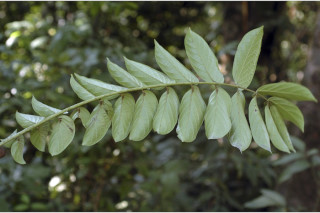
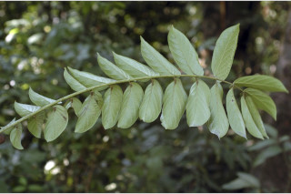
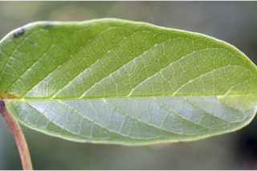
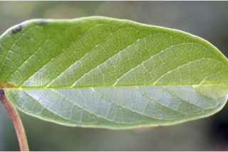

Botanical descriptions
ಸಸ್ಯದ ವೈಜ್ಞಾನಿಕ ವಿವರ
Botanical descriptions
மரங்களின் பண்புகள்
Habit
ಪ್ರಕೃತಿ
Habit
வளரியல்பு
Tall deciduous trees, up to 30 m tall.
30ಮೀ ಎತ್ತರಕ್ಕೆ ಬೆಳೆಯುವ ಎಲೆಯುದುರುವ ಮರಗಳು.
30 മീറ്റര് വരെ ഉയരത്തില് വളരുന്ന ഇലപൊഴിയും മരങ്ങള്.
உயரமான இலையுதிர் மரம், 30 மீ. வரை வளரக்கூடியது.
Trunk & Bark
ಕಾಂಡ ಮತ್ತು ತೊಗಟೆ
Trunk & Bark
தண்டு மற்றும் மரப்பட்டை
Bark scaly, linearly lenticellate; blaze whitish brown.
ತೊಗಟೆ ಚಕ್ಕೆಯುಕ್ತ ಮಾದರಿಯಲ್ಲಿದ್ದು ರೇಖಾತ್ಮಕ ವಾಯುವಿನಿಮಯ ಬೆಂಡುರಂಧ್ರಗಳನ್ನು ಹೊಂದಿರುತ್ತದೆ .ಕಚ್ಹು ಮಾಡಿದ ಜಾಗ ಶ್ವೇತ ಮಿಶ್ರಿತ ಕಂದು ಬಣ್ಣ ಹೊಂದಿರುತ್ತವೆ
രേഖീയമായ ശ്വസനരന്ധ്രങ്ങളോടുകൂടിയ, ശല്ക്കങ്ങളുളള പുറംതൊലി; വെട്ട്പാടിന് വെളളകലര്ന്ന തവിട്ട് നിറം.
மரத்தின் பட்டை செதில் போன்றது, நீள்வாக்கு லெண்டிசெல் உடையது; உள்பட்டை வெள்ளை கலந்த ப்ரவுன் நிறம்.
Branches and Branchlets
ಕವಲುಗಳು ಮತ್ತು ಕಿರುಕೊಂಬೆಗಳು
Branches and Branchlets
கிளைகள் & சிறிய நுனிக்கிளைகள்
Branchlets terete, glabrous, corky, lenticellate.
ಕಿರುಕೊಂಬೆಗಳು ದುಂಡಾಕೃತಿಯವು. ಮೇಲ್ಮೈ ರೋಮರಹಿತವಾಗಿದ್ದು, ಬೆಂಡು ಮಾದರಿಹೊಂದಿದ್ದು ವಾಯುವಿನಿಮಯ ಬೆಂಡುರಂಧ್ರಗಳ ಸಮೇತವಿರುತ್ತವೆ.
ഉപശാഖകള് ഉരുണ്ടതും, അരോമിലവും, കോര്ക്ക്പോലുളളതും, ശ്വസനരന്ധ്രങ്ങള് നിറഞ്ഞതും.
நுனிக்கிளைகள் குறுக்குவெட்டுத் தோற்றத்தில் வளையமானது, உரோமங்களற்றது, கார்க் போன்ற லெண்டிசெல் கொண்டது.
Leaves
ಜಿನುಗು ದ್ರವ
Leaves
இலைகள்
Leaves compound, imparipinnate, to 120 cm long; rachis triangular, glabrous; leaflets opposite 9-14 pairs with terminal odd one; petiolule 0.6 cm long; lamina 8-24 x 3-10 cm, ovate, apex acuminate, base asymmetric, margin entire, chartaceous, shining above, glabrous; midrib flat or slightly canaliculate above; secondary_nerves of one side of lamina is more acute then other; tertiary_nerves broadly reticulate.
അസമപിച്ഛക, ബഹുപത്രങ്ങള്, 120 സെ. മീ വരെ നീളം; ബഹുപത്ര അക്ഷത്തിന് കോണാകാരം, അരോമിലം; പത്രകങ്ങള് സമുഖം, 9 മുതല് 14 വരെ ജോഡികള്, അറ്റത്ത് ഒന്നുമാത്രം; പത്രകവൃന്തത്തിന് 0.6 സെ. മീ നീളം; പത്രകഫലകത്തിന് 8 മുതല് 24 സെ. മീ വരെ നീളവും 3 മുതല് 10 സെ. മീ വരെ വീതിയും, അണ്ഡാകാരം, അഗ്രം വാലോട്കൂടിയതാണ്, പത്രാധാരം അസമമാണ്, അവിഭജിതം, കടലാസ്പോലത്തെ പ്രകൃതം, മുകളില് തിളങ്ങുന്നതാണ്, അരോമിലം; മുഖ്യസിര മുകളില് പരന്നോ ചെറുതായി ചാലോട് കൂടിയതോ ആണ്; പത്രകഫലകത്തിലെ ഒരു ഭാഗത്തെ ദ്വിതീയ ഞരമ്പുകള് മറ്റേതിനേക്കാള് കൂടുതല് നിശിത കോണിലാണ്; വീതിയേറിയ ജാലിക തീര്ക്കുന്ന തൃതീയ ഞരമ്പുകള്.
இலைகள் கூட்டிலைகள், ஒற்றைபடை சிறகுவடிவக்கூட்டிலைகள், 120 செ.மீ. நீளமானது; மத்தியகாம்பு (ராக்கிஸ்) முக்கோண வடிவானது, உரோமங்களற்றது; சிற்றிலைகள் எதிரடுக்காமானவை, 9-14 ஜோடிகளுடன் நுனியில் ஒற்றை சிற்றிலையுடையது; சிற்றிலைக்காம்பு 0.6 செ.மீ. நீளமானது; சிற்றிலையின் அலகு 8-24 X 3-10 செ.மீ., முட்டை வடிவானது, சிற்றிலையின் அலகின் நுனி அதிக்கூரியது, சிற்றிலையின் தளம் சமமற்றது, சிற்றிலையின் விளிம்பு முழுமையானது, சார்ட்டேசியஸ், அலகின் மேற்பரப்பு பளபளப்பானது, கீழ்பரப்பு உரோமங்களற்றது; மையநரம்பு அலகின் மேற்பரப்புக்கு சமமானது அல்லது சிறிது பள்ளமானது; இரண்டாம் நிலை நரம்புகள் ஒரு புறத்தில் அடுத்த பக்கத்தைவிட குறுகிய கோணமுடையது; மூன்றாம் நிலை நரம்புகள் அகன்ற வலைப்பின்னலுடையது.
Inflorescence / Flower
ಎಲೆಗಳು
Inflorescence / Flower
மஞ்சரி / மலர்கள்
Inflorescence panicle; flowers purple outside and yellow within, petals wooly along margin.
ಎಲೆಗಳು 120ಸೆಂ.ಮೀ. ವರೆಗಿನ ಉದ್ದ ಹೊಂದಿದ್ದು ಅಸಮ ಸಂಖ್ಯಾಸಂಯುಕ್ತ ಮಾದರಿಯವು; ಅಕ್ಷದಿಂಡು ತ್ರಿಕೋಣಾಕಾರವಾಗಿದ್ದು ರೋಮರಹಿತವಾಗಿರುತ್ತದೆ. ಕಿರುಎಲೆಗಳು ಅಭಿಮುಖಿಗಳು ಹಾಗೂ 9 ರಿಂದ 14 ಜೋಡಿಗಳಿದ್ದು ಅಗ್ರದಲ್ಲಿ ಒಂದು ಕಿರುಎಲೆ ಹೊಂದಿರುತ್ತವೆ. ಕಿರುತೊಟ್ಟು 0.6ಸೆಂ.ಮೀ. ಉದ್ದ; ಪತ್ರಗಳು 18 ರಿಂದ 24ಸೆಂ.ಮೀ. ಉದ್ದ, 3 ರಿಂದ 10 ಸೆಂ.ಮೀ. ಅಗಲವಿದ್ದು, ಅಂಡಾಕಾರವಾಗಿದ್ದು ತುದಿ ಕ್ರಮೇಣ ಚೂಪಾಗುವ ಮಾದರಿಯದಾಗಿದ್ದು. ಬುಡ ಅಸಮ್ಮಿತಿಯಾಗಿದ್ದು, ನಯವಾದ ಅಂಚು ಕಾಗದವನ್ನೋಲುವ ಹಾಗೂ ಮೇಲ್ಭಾಗದಲ್ಲಿ ಹೊಳಪನ್ನು ಮೇಲ್ಮೈ ಹೊಂದಿರುತ್ತವೆ ಹಾಗೂ ರೋಮರಹಿತವಾಗಿರುತ್ತವೆ; ಪ್ರಧಾನನಾಳ ಪತ್ರದ ಮೇಲ್ಭಾಗದಲ್ಲಿ ಚಪ್ಪಟೆಯಾಗಿ ಅಥವಾ ಲಘುವಾದ ಕಾಲುವೆಗೆರೆಗಳ ಸಮೇತವಿರುತ್ತದೆ; ಪತ್ರದ ಒಂದು ಭಾಗದ ಎರಡನೇ ದರ್ಜೆಯ ನಾಳಗಳು ಮತ್ತೊಂದು ಭಾಗದ ಎರಡನೇ ದರ್ಜೆಯ ನಾಳಗಳಿಗಿಂತ ಹೆಚ್ಚು ಚೂಪಾಗಿರುತ್ತವೆ. ತೃತೀಯ ದರ್ಜೆಯ ನಾಳಗಳು ವಿಶಾಲವಾದ ಜಾಲಬಂಧನಾಳ ವಿನ್ಯಾಸದಲ್ಲಿರುತ್ತವೆ.
പൂങ്കുല പാനിക്കിള് ആണ്; പുറത്ത് ഊതനിറവും അറ്റത്ത് മഞ്ഞനിറവുമുളള പൂക്കള്, ദളങ്ങളുടെ അരികുകള് കമ്പിളിരോമങ്ങള്പോലുളള രോമങ്ങളാല് കനത്ത രോമാവൃതമാണ്.
பேனிக்கிள் மஞ்சரி; மலர்கள் பர்புள் நிறமானது மற்றும் உட்புறம் மஞ்சள் நிறமானது, அல்லி இதழ்களின் விளிம்பு மெண்மையான உரோமங்கள் கொண்டது.
Fruit and Seed
ಪುಷ್ಪಮಂಜರಿ/ಹೂಗಳು
Fruit and Seed
கனி / விதை
Capsule, 30-50 x 6-8 cm, brown, 2 winged; seeds many, flat, with membranous wing.
ಪುಷ್ಪ ಮಂಜರಿಗಳು ಕವಲೊಡೆದ ಮಧ್ಯಾಭಿಸರ ಮಾದರಿಯವು; ಹೂಗಳು ಹೊರ ಆವರಣದಲ್ಲಿ ಕೆನ್ನೀಲಿ ಬಣ್ಣವನ್ನೂ ಒಳಾವರಣದಲ್ಲಿ ಹಳದಿ ಬಣ್ಣವನ್ನೂ ಹೊಂದಿರುತ್ತದೆ. ಪುಷ್ಪದಳಗಳ ಅಂಚು ಉಣ್ಣೆಯಂತಹ ರೋಮಗಳ ಸಮೇತವಿರುತ್ತವೆ.
കായക്ക് 30 മുതല് 50 സെ.മീ വരെ നീളവും 6 മുതല് 8 സെ. മീ വരെ വീതിയും, തവിട്ട് നിറം, 2 ചിറകുകളോട് കൂടിയതാണ്; വിത്തുകള് ധാരാളം, പരന്നതും, സ്തരീയ ചിറകുകളോട് കൂടിയതുമാണ്.
வெடிக்கனி (கேப்சூல்), 30-50 X 6-8 செ.மீ., கரும்அரக்கு நிறம்; விதைகள் எண்ணற்றவை, தட்டையானது, ஜவ்வு போன்ற சிறகுடையது.
Literatures
ಗ್ರಂಥ ಸೂಚಿ
Literatures
சான்று ஏடு
Engler & Prantl, Planzenf. 4(3b): 244. 1895; Gamble, Fl. Madras 2: 1000.1993 (re. ed); Sasidharan, Biodiversity documentation for Kerala- Flowering Plants, part 6: 334. 2004; Keshava Murthy and Yoganarasimhan, Fl. Coorg (Kodagu) 321. 1990. Cook, Fl. Bombay 2. 333. 1902.
Engler & Prantl, Planzenf. 4(3b): 244.1895; Gamble, Fl. Madras 2: 1000.1997 (re.ed); Sasidharan, Biodiversity documentation for Kerala- Flowering Plants, part 6: 334. 2004; Keshava Murthy and Yoganarasimhan, Fl. Coorg (Kodagu) 321. 1990. Cooke, Fl. Bombay 2. 333. 1902.
Engler & Prantl, Planzenf. 4(3b): 244. 1895; Gamble, Fl. Madras 2: 1000.1997 (re. ed); Sasidharan, Biodiversity documentation for Kerala- Flowering Plants, part 6: 334. 2004; Keshava Murthy and Yoganarasimhan, Fl. Coorg (Kodagu) 321. 1990. Cook, Fl. Bombay 2. 333. 1902.
Engler & Prantl, Planzenf. 4(3b): 244. 1895; Gamble, Fl. Madras 2: 1000.1997 (re. ed); Sasidharan, Biodiversity documentation for Kerala- Flowering Plants, part 6: 334. 2004; Keshava Murthy and Yoganarasimhan, Fl. Coorg (Kodagu) 321. 1990. Cook, Fl. Bombay 2. 333. 1902.


 

 
